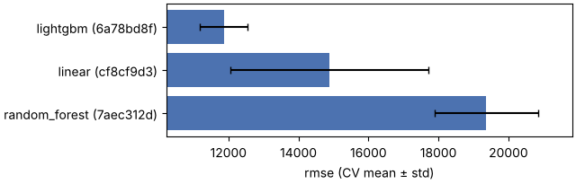
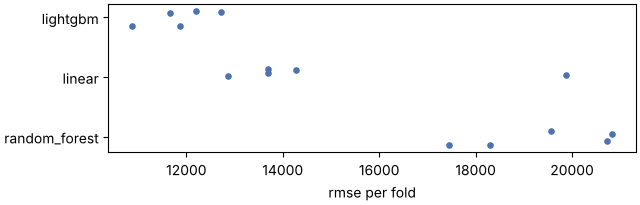
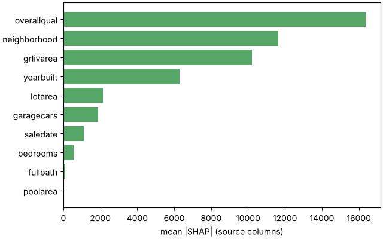
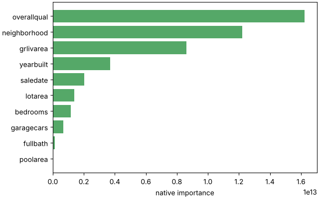
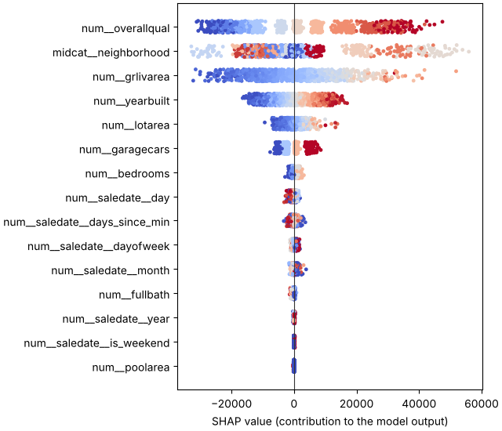
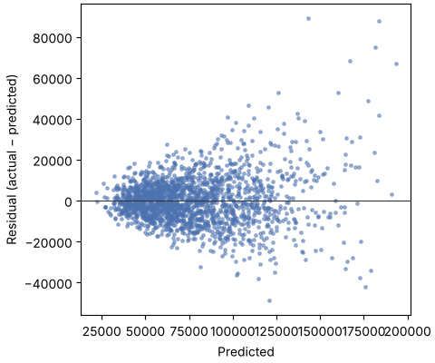
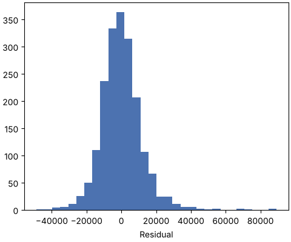
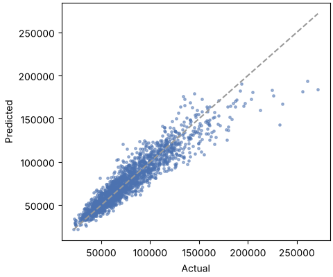

| Item | Value |
|---|---|
| Task | regression |
| Target | saleprice |
| Final model | lightgbm (0-lightgbm-6a78bd8f) |
| Primary metric | rmse (minimize) |
| CV score (DEV, mean ± std) | 11868.7241 ± 677.0062 |
| Independent test score | 11581.8126 |
| Run status | completed |
| Item | Value |
|---|---|
| File | house_prices.csv |
| Format | csv |
| Rows (raw / valid) | 2400 / 2400 |
| Columns | 12 |
| Development rows | 1920 |
| Feature columns | 10 |
| Duplicate rows | 0 |
| Validation | kfold, k = 5, repeats = 1, holdout fraction = 0.2 |
| Excluded column | Normalized name | Reason |
|---|---|---|
| Id | id | identifier_integer_unique |
| Original column name | Normalized name |
|---|---|
| Id | id |
| Neighborhood | neighborhood |
| OverallQual | overallqual |
| GrLivArea | grlivarea |
| LotArea | lotarea |
| YearBuilt | yearbuilt |
| Bedrooms | bedrooms |
| FullBath | fullbath |
| GarageCars | garagecars |
| PoolArea | poolarea |
| SaleDate | saledate |
| SalePrice | saleprice |
No data-quality or leakage warnings were raised.
Plan source: rule-based planner.
| Model | Priority | Class weight | Tuning share |
|---|---|---|---|
| lightgbm | 1 | none | 0.60 |
| random_forest | 2 | none | 0.25 |
| linear | 3 | none | 0.15 |
Validation status: valid.
| Decision | Value |
|---|---|
| Numeric imputation | median |
| Categorical imputation | most_frequent |
| Missing indicators | yes |
| Low-cardinality encoding | onehot |
| High-cardinality encoding | frequency |
| Target transform | none |
Every learned transformation is fitted inside the pipeline on training-fold rows only.
Baseline features: datetime parts, missing-value indicators and rare-category grouping, built inside the pipeline.
No LLM-proposed features were used.
| Entry | Model | Features | CV mean | CV std | Fold scores | Fit s | Status |
|---|---|---|---|---|---|---|---|
| 0-lightgbm-6a78bd8f | lightgbm | baseline | 11868.7241 | 677.0062 | 12714.0983, 11878.5289, 12196.7964, 10882.8128, 11671.3839 | 0.47 | ok |
| 0-linear-cf8cf9d3 | linear | baseline | 14879.3234 | 2835.4424 | 14273.6121, 19870.3433, 13699.9924, 12856.9294, 13695.7400 | 0.05 | ok |
| 0-random_forest-7aec312d | random_forest | baseline | 19372.8154 | 1485.2653 | 20826.1148, 20730.0337, 18298.4736, 17453.8782, 19555.5766 | 0.46 | ok |


No reflection rounds were run.
Ensemble kept: no. Reason: hill climbing selected a single model
| Member | Weight |
|---|---|
| 0-lightgbm-6a78bd8f | 1.000 |
Rule: max mean CV score; near-ties (0.25 SEM): simpler, fewer features, faster, id. Winner: 0-lightgbm-6a78bd8f.
Cross-validation scores of the selected model are optimistically biased, because the same folds were used for tuning and selection.
3 configurations were compared in total (every model and retrained variant on the leaderboard, including failed and skipped ones). The more configurations are compared, the more optimistic the best score tends to be.
| Runner-up | Mean difference | Min | Max | Folds won |
|---|---|---|---|---|
| 0-linear-cf8cf9d3 | 3010.5994 | 1503.1960 | 7991.8144 | 5/5 |
Paired fold differences are descriptive: with this few folds they are not a significance test.
| Model | rmse | Bootstrap 95% interval |
|---|---|---|
| Final model | 11581.8126 | — |
| Reference baseline (lightgbm) | 11882.0751 | — |
These rows were used once, after the selection was frozen, and never for training, tuning or selection.
Method: shap_tree. Rows explained: 1000.



| Rank | Source column | Importance |
|---|---|---|
| 1 | overallqual | 16356.0380 |
| 2 | neighborhood | 11630.9537 |
| 3 | grlivarea | 10201.8995 |
| 4 | yearbuilt | 6298.1833 |
| 5 | lotarea | 2126.7541 |
| 6 | garagecars | 1873.1453 |
| 7 | saledate | 1089.5379 |
| 8 | bedrooms | 560.9676 |
| 9 | fullbath | 113.5557 |
| 10 | poolarea | 7.1873 |
Overall OOF mean absolute error on DEV: 8560.5701.
| Predicted from | to | Mean absolute error | Rows |
|---|---|---|---|
| 21801.9355 | 43964.1289 | 4246.7599 | 192 |
| 44044.7930 | 50941.1484 | 5081.6310 | 192 |
| 50953.9922 | 57388.5586 | 6172.1516 | 192 |
| 57392.8086 | 63868.3320 | 6366.7978 | 192 |
| 63921.0938 | 70794.6250 | 7223.0671 | 192 |
| 70872.2188 | 79606.3750 | 8224.1153 | 192 |
| 79632.6094 | 89289.7031 | 8362.6459 | 192 |
| 89308.8828 | 101142.0312 | 11124.5722 | 192 |
| 101164.2188 | 118772.2109 | 11861.1128 | 192 |
| 118828.9219 | 193369.5312 | 16942.8475 | 192 |
| Column | Rank | Category | Rows | Mean absolute error |
|---|---|---|---|---|
| neighborhood | 1 | district_10 | 100 | 15740.6354 |
| neighborhood | 2 | district_15 | 106 | 12583.9642 |
| neighborhood | 3 | district_11 | 106 | 10261.5128 |
| neighborhood | 4 | district_18 | 118 | 9887.8872 |
| neighborhood | 5 | district_07 | 93 | 8933.7125 |



| Item | Value |
|---|---|
| Run id | 01M7X1SWPW6ZAN2X27PPRTB98N |
| TabPilot version | 0.1.0 |
| Execution profile | hosted |
| Split id | 1b593326034ed31ac92058ebb0509d2f4d3e28fbea50b551b4ce03096a9776a5 |
| Seeds | root=42, split=42, model=43, optuna=44, profile=45, explain=46 |
| Libraries | catboost 1.2.10, lightgbm 4.7.0, numpy 2.4.6, optuna 5.0.0, pandas 3.0.6, scikit-learn 1.9.1, xgboost 2.1.4 |
| Time budget (s) | 240 |
| Elapsed at report (s) | 60.4 |
| Trials used | 60 of 60 |
Template narrative, built deterministically from the facts table. Reason: no LLM provider available.
This run predicts `saleprice` [F2] as a regression [F1] task. TabPilot compared 3 [F8] model types with cross-validation over 5 [F7] folds on the development rows and selected lightgbm [F4] by its rmse [F3] score.
The selected model's mean cross-validated score is 11868.7241 [F5], with a fold-to-fold standard deviation of 677.0062 [F6]. The runner-up, linear [F9], averaged 14879.3234 [F10]; the selected model scored higher on 5 [F12] of 5 [F7] folds. With this few folds the comparison is descriptive, not a significance test. Cross-validated scores of the selected model are optimistic, because the same folds were used to choose it.
On the independent test rows, used once after selection, the selected model scored 11581.8126 [F13]. The reference baseline, lightgbm [F14], scored 11882.0751 [F15].
The inputs this model relied on most were `overallqual` [F20], `neighborhood` [F21], `grlivarea` [F22], `yearbuilt` [F23] and `lotarea` [F24]. Importance describes how this model uses its inputs, not what would happen in the world if a value changed; correlated inputs can share or swap importance.